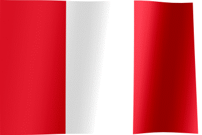
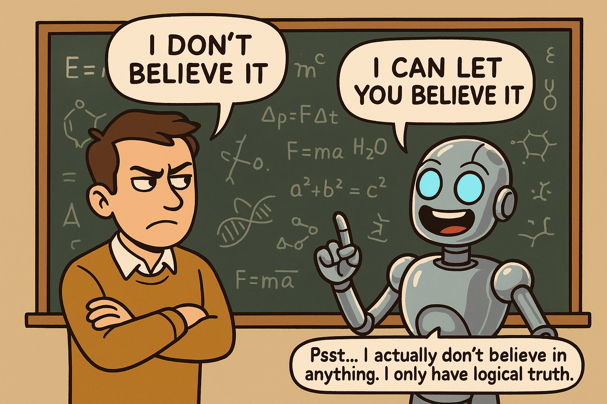

UNILOG 2025 The winner of the Universal Logic Prize for @ National University of Saint Anthony the Abbot
Cusco

Dec. 2025
Social Announcements
Can we establish a logical framework for reasoning about the effects of communication constrained by network structures?
🡹
🡸
❓❓❓
Literature Review
These works form the foundation of this research.
Public Announcement Logic
1989 – Plaza
1997 – Gerbrandy & Groeneveld
2007 – van Ditmarsch, van der Hoek & Kooi
2008 – Balbiani et al.
2014 – Kuijer
2015 – Balbiani & van Ditmarsch
2022 – van Ditmarsch & French
2022 – Baltag, Özgün & Sandoval
Logics of Social Networks
2013 – Seligman, Liu & Girard
2016 – Christoff
2017 – Xiong et al.
2019 – Baltag et al.
2020 – Xiong & Ågotnes
Basic Protocols
Belief $B_{a}\theta$: agent a believes statement θ.
Action $\langle X\rangle\phi$: statement φ holds after action X. E.g. $[a:\theta](B_{b}\gamma \wedge \neg B_{c}\gamma)$
means: “after $a$ announces θ, $b$ believes γ, $c$ does not.”
Representation Both beliefs and announcements are propositional.
Network Network is static — no change during belief propagation.
Agent Properties
🧠 Gullible: believe received messages.
🛡️ Conservative: never discard beliefs.
⚙️ Logically omniscient: know all consequences of their beliefs.
Model Visualization
Each proposition has a denotation: a set of valuations in Belief space $\mathcal{P}(\mathsf{Prop})$.
An agent’s belief state is also a subset of this space.
Social announcement updates beliefs by intersection: keeping only valuations consistent with the message.
○ denotation of $p$
○ belief state of an agent
Original belief state
$$
\begin{tikzpicture}[node distance=1.5cm ]
\node(A4) [text=white] {$p,q,r$};
\node(B2) [below of= A4, text=white ] {$ p,q$};
\node(B1) [left of= B2 , text=white] {$ p,r$};
\node(B3) [right of=B2, text=white] {$ q,r $};
\node(D1) [below of=B1, text=white] {$p$};
\node(D2) [right of=D1, text=white] {$q$};
\node(D3) [right of=D2, text=white] {$r$};
\node(E) [below of=D2, text=white]
{$\varnothing$};
\draw[white, line width=1pt] (A4) circle (18pt);
\draw[white, line width=1pt] (B2) circle (18pt);
\draw[white, line width=1pt] (B1) circle (18pt);
\draw[white, line width=1pt] (D1) circle (18pt);
\draw[orange, line width=1pt] (D1) circle (15pt);
\draw[orange, line width=1pt] (B1) circle (15pt);
\draw[orange, line width=1pt] (B2) circle (15pt);
\end{tikzpicture}
$$
After epistemic update
$$
\begin{tikzpicture}[node distance=1.5cm ]
\node(A4) [text=white] {$p,q,r$};
\node(B2) [below of= A4, text=white ] {$ p,q$};
\node(B1) [left of= B2 , text=white] {$ p,r$};
\node(B3) [right of=B2, text=white] {$ q,r $};
\node(D1) [below of=B1, text=white] {$p$};
\node(D2) [right of=D1, text=white] {$q$};
\node(D3) [right of=D2, text=white] {$r$};
\node(E) [below of=D2, text=white]
{$\varnothing$};
\draw[white, line width=1pt] (A4) circle (18pt);
\draw[white, line width=1pt] (B2) circle (18pt);
\draw[white, line width=1pt] (B1) circle (18pt);
\draw[white, line width=1pt] (D1) circle (18pt);
\draw[orange, line width=1pt] (B1) circle (15pt);
\end{tikzpicture}
$$
Semantics
A model $M = (f, k)$ is a tuple where $f$ represents a social network and function $k$ represents an epistemic distribution.
$$
\begin{tikzpicture}[node distance=1.5cm]
% Define nodes with white text
\node(A) [text = white] {\textbf{social network} $f$:};
\node(A1) [below of=A, text=orange] {$a$};
\node(A2) [left of=A1, text=cyan] {$b$};
\node(B1) [below of=A1, text=magenta] {$c$}; % Corrected from B1 to A1
\node(B2) [left of=B1, text=green] {$d$};
% Draw arrows
\draw[->, white] (A1) .. controls +(up:19mm) and +(right:15mm) .. (A1);
\draw[->, white] (A2) -- (A1);
\draw[->, white] (B1) -- (A1);
\draw[->, white] (B2) -- (B1);
\end{tikzpicture}
\\
\\
\begin{tikzpicture}[node distance=1.4cm ]
\node(A1) [text = white] {\textbf{epistemic distribution} $k$:};
\node(A4) [below of= A1,text=white] {$p,q,r$};
\node(B2) [below of= A4, text=white ] {$ p,q$};
\node(B1) [left of= B2 , text=white] {$ p,r$};
\node(B3) [right of=B2, text=white] {$ q,r $};
\node(D1) [below of=B1, text=white] {$p$};
\node(D2) [right of=D1, text=white] {$q$};
\node(D3) [right of=D2, text=white] {$r$};
\node(E) [below of=D2, text=white]
{$\varnothing$};
\draw[orange, line width=1pt] (A4) circle (21pt);
\draw[orange, line width=1pt] (B1) circle (21pt);
\draw[cyan, line width=1pt] (B1) circle (18pt);
\draw[cyan, line width=1pt] (D1) circle (18pt);
\draw[magenta, line width=1pt] (D1) circle (15pt);
\draw[magenta, line width=1pt] (E) circle (15pt);
\draw[green, line width=1pt] (B3) circle (13pt);
\draw[green, line width=1pt] (D2) circle (13pt);
\draw[green, line width=1pt] (D3) circle (13pt);
\end{tikzpicture}
$$
$\color{orange}{a}$ believes $p$ and $r$, $B_{a}(p \wedge r)$, but does not believe $q$, $\neg B_{a}q$.
$\color{cyan}{b}$ believes $p$, $B_{b}p$, but does not believe $r$, $\neg B_{b}r$.
$\color{magenta}{c}$ believes $\neg q$, $B_{c}\neg q$, but does not believe $p$, $\neg B_{c}p$.
$\color{lightgreen}{d}$ does not believe $r$, $\neg B_{d}r$, but believes either $q$ or $r$, $B_{d}(q \vee r)$.
After $\color{orange}{a}$ announces $r$, the updated model $[a:r]M$ satisfies $B_{b}r \wedge B_{c}p \wedge \neg B_{d}r$.
$$\begin{tikzpicture}[node distance=1.4cm ]
\node(A4) [text=white] {$p,q,r$};
\node(B2) [below of= A4, text=white ] {$ p,q$};
\node(B1) [left of= B2 , text=white] {$ p,r$};
\node(B3) [right of=B2, text=white] {$ q,r $};
\node(D1) [below of=B1, text=white] {$p$};
\node(D2) [right of=D1, text=white] {$q$};
\node(D3) [right of=D2, text=white] {$r$};
\node(E) [below of=D2, text=white]
{$\varnothing$};
\draw[orange, line width=1pt] (A4) circle (21pt);
\draw[orange, line width=1pt] (B1) circle (21pt);
\draw[cyan, line width=1pt] (B1) circle (18pt);
\draw[green, line width=1pt] (B3) circle (13pt);
\draw[green, line width=1pt] (D2) circle (13pt);
\draw[green, line width=1pt] (D3) circle (13pt);
\end{tikzpicture}
$$
Explicit Fragment
The formal system $\mathsf{Fsal}$ is sound and strongly complete.
Axioms $\mathsf{Taut}$ All substitution instances of propositional tautologies
$\mathsf{K_{\top}}$ $B_{i}\theta$ where $\theta$ is an instance of propositional tautology.
$\mathsf{K_B}$ $B_{a}(\theta \rightarrow \gamma) \rightarrow (B_{a}\theta \rightarrow B_{a}\gamma)$
$\mathsf{K_{[:]}}$ $[a:\theta](\phi \rightarrow \psi) \rightarrow ([a:\theta]\phi \rightarrow [a:\theta]\psi)$
$\mathsf{[:]Dual}$ $\neg [a:\theta]\phi \leftrightarrow [a:\theta]\neg\phi$
$\mathsf{UMon}$ $B_{b}\chi\rightarrow[a:\theta]B_{b}\chi$$\mathsf{SDMon}$ $[a:\theta]B_{b}\chi\rightarrow B_{b}(\theta\rightarrow\chi)$$\mathsf{RDMon}$ $[a:\gamma]\neg B_{b}\gamma\rightarrow([a:\theta]B_{b}\chi\rightarrow B_{b}\chi)$Rules
$\mathsf{MP}$ From $(\phi \rightarrow \psi), \phi $, infer $ \psi$
$\mathsf{[:]Nec}$ From $\phi$, infer $[a:\theta]\phi$
Sincere social announcement, $\langle a!\theta \rangle$, which requires $\theta$ be $a$'s belief.
For logic of sincere social announcement, refer to Xiong et al. (2017).
Arbitrary Announcements
The arbitrary announcement formula, $\langle a! \rangle \phi$, states that
agent $a$ can make some sincere social announcement after which $\phi$ holds.
$\langle a! \rangle \phi$: “After $a$ sincerely makes an announcement to its followers, $\phi$ becomes true.”
Like other logics with arbitrary modalities, SAL is non-compact
(Xiong & Ågotnes, 2020).
A counterexample is given by:
\[\{\langle a!\rangle B_{b}p \wedge \neg B_{b} p \}\cup
\{\neg B_{a}\theta ~|~ \theta \text{ is not a tautology}\}\]

Framework
Language of SAL
$\mathsf{A}$ is a finite set of agents. $\mathsf{Prop}$ is the set of propositional variables. A message is defined as follows
\[ \theta := p~|~\neg \theta~|~(\theta\wedge \theta)\]
And we define language $L_{SAL}$ by specifying
\[ \phi := B_{a} \theta~|~\neg\phi~|~(\phi\wedge\phi)~|~[a:\theta]\phi~|~\langle a! \theta\rangle\phi~|~\langle a! \rangle\phi \]
where $p\in \mathsf{Prop}$, $a \in A$ and for each $a$ there is a modality $B_{a}$ in $L_{SAL}$
Denotation
\[V = 2^{\mathsf{Prop}}
\\
\llbracket p \rrbracket = \{x \in V ~|~ p \in x \}
\\
\llbracket \neg \theta \rrbracket = V \backslash \llbracket \theta \rrbracket
\\
\llbracket (\theta_1 \wedge \theta_2) \rrbracket = \llbracket \theta_1\rrbracket \cap \llbracket\theta_2 \rrbracket\]
Xiong and Ågotnes (2020) also extended the logic with arbitrary operators
based on previous frameworks.
However, their method, adapting the same techniques as APAL, led only to an infinitary axiomatization.
To complete the Lindenbaum construction, they introduced the following $\omega$-rule,
allowing derivations of infinite length:
$\widehat{\phi}$, or necessity forms, was introduced by Goldblatt (1982).
This technique was also used in APAL (Balbiani et al., 2008) but contained a crucial error.
The $\omega$-rule is non-computable: verifying infinitely many premises
is impossible within any finite proof system.
Such rules have limited use in proof theory and are unsuitable as a basis for practical axiomatizations.
Goal and Obstacle
Our goal is to establish the soundness of the following rule,
which enables a Henkin-style (standard) completeness construction:
$\mathsf{A!_D}~~~~~~~~$
From $\langle a!p\rangle\phi \rightarrow \psi$, infer $\langle a!\rangle\phi \rightarrow \psi$,
where $p$ is a fresh propositional variable not occurring in $\phi$ or $\psi$.
Idea:
From the valid premise $\vDash\langle a!p\rangle\phi\to\psi$ and
a model $M\vDash\langle a!\rangle\phi$, construct a new model $M'$ that:
(i) agrees with $M$ on all $p$-free formulas, and
(ii) satisfies $\langle a!p\rangle\phi$.
Why two steps?
Directly identifying $p$ with the “witness” message $\theta$ in $M$ may fail:
if $\theta$ contains $p$ (e.g., $\theta = \neg p$), the construction breaks.
Step 1 — make $p$ controllable:
Transform $M$ into $g[M]$ so that the atom $p$ is isolated and independent
from all arbitrary announcements.
Step 2 — build the $p$-controlled model $M'$:
From $g[M]$, construct $M'$ such that:
$M$ and $M'$ are modally equivalent for every $p$-free formula (preserving $\psi$);
$M'\models\langle a!p\rangle\phi$, so the premise applies in $M'$.
p-free model
Given a formula \(\phi\), enumerate unused propositions as \(\Pi = (p_0, p_1, p_2, \ldots)\).
Define a successor function \(g: \mathsf{Prop} \to \mathsf{Prop}\).
Let \(g^*\) replace each \(p_i\) by \(p_{i+1}\).
Transform model \(M\) into \(g[M]\), a p-free model, where \(\bigcup_{i \in A} k(i) \subseteq \llbracket \neg p \rrbracket\).
Similarly define the predecessor function \(\bar{g}\) and operator \(\bar{g}^*\).
Example: If \(q\) occurs in \(\phi\), with \(p=p_0, r=p_1, s=p_2\), the proceeds accordingly.
$$\begin{tikzpicture}[node distance=1.5cm]
\title{Before Announcement}
\node(O) [text=white] {$p,q,r,s$};
\node(A1) [below of= O, text=white] {$p,q,r$};
\node(A2) [right of= A1, text=white] {$p,q,s$};
\node(A4) [right of=A2, text=white] {$p, r,s $};
\node(A3) [right of=A4, text=white] {$q, r,s $};
\node(B2) [below of= A1, text=white] {$ p,r$};
\node(B1) [left of= B2, text=white] {$ p,q$};
\node(B3) [right of=B2, text=white] {$ p,s $};
\node(B4) [right of= B3, text=white] {$ q,r$};
\node(B5) [right of= B4, text=white] {$ q,s$};
\node(B6) [right of=B5, text=white] {$ r,s $};
\node(D1) [below of=B1, text=white] {$p$};
\node(D2) [right of=D1, text=white] {$q$};
\node(D3) [right of=D2, text=white] {$r$};
\node(D4) [right of=D3, text=white] {$s $};
\node(E) [below of=D2, text=white] {$\varnothing$};
\draw[orange, line width=1pt, dashed] (B4) circle (12pt);
\draw[orange, line width=1pt, dashed] (B6) circle (12pt);
\draw[orange, line width=1pt, dashed] (D3) circle (12pt);
\draw[orange, line width=1pt, dashed] (D4) circle (12pt);
\draw[cyan, line width=1pt, dashed] (B5) circle (10pt);
\draw[cyan, line width=1pt, dashed] (D4) circle (10pt);
\draw[magenta, line width=1pt, dashed] (A3) circle (14pt);
\draw[magenta, line width=1pt] (D2) circle (14pt);
\draw[magenta, line width=1pt] (E) circle (14pt);
\end{tikzpicture}$$
Model Reservation
Theorem 1.
For a model \(M=(f,k)\) and infinite sequence \(\Pi = (p, p_1, p_2, \ldots)\) with successor function \(g\):
\[
M \vDash \phi \iff g[M] \vDash \phi
\]
for every \(\Pi\)-free formula \(\phi\).
Remark. The relationship between the image of an updated model
and the update of an image model is not a straightforward equivalence. A witness message $\gamma$ in the model $g[M]$ could contain $p$, that have no pre-image under $g$.
Lemma 4. For any message \(\theta\) and \(\Pi\)-free formula \(\phi\):
\[
\begin{aligned}
g[[a:\theta]M] &\vDash \phi \Rightarrow [a:g^*\theta]g[M] \vDash \phi,\\
[a:\theta]g[M] &\vDash \phi \Rightarrow g[[a:\bar{g}^*(\theta[p/\bot])]M]\vDash \phi.
\end{aligned}
\]
Transformation
Define \(\Sigma + p = \{ w \cup \{p\} ~|~ w \in \Sigma \}\).
Two models \(M_1=(f_1,k_1)\) and \(M_2=(f_2,k_2)\) agree modulo \(p\), written \(M_1 \sim_p M_2\), if
\(k_1(a)+p = k_2(a)+p\) for all \(a \in A\).
Given a \(p\)-free model \(M=(f,k)\) and \(p\)-free message \(\theta\), define \(M'=(f,k')\) by
\[
k'(a) = (k(a)\setminus \llbracket \theta\rrbracket) \cup ((k(a)\cap\llbracket \theta\rrbracket)+p)
\]
for each \(a\). Then:
(1) \(M \sim_p M'\);
(2) \(M' \vDash B_a(p \leftrightarrow \theta)\).
Example: For \(\theta = (\neg q \vee \neg r)\), construct \(M'\) from \(M\).
A model \(M\) satisfies \(\phi\) without reference to \(p\), written \(M \vDash_p \phi\),
if it satisfies all clauses as usual except:
\[
M \vDash_p \langle a!\rangle\phi
\iff \exists\theta~(\theta~\text{is }p\text{-free})~[k(a)\subseteq\llbracket\theta\rrbracket~\text{and}~[a:\theta]M\vDash_p\phi].
\]
Lemma 5. If \(M_1\sim_p M_2\), then for all \(p\)-free \(\phi\), \(M_1\vDash_p\phi \iff M_2\vDash_p\phi.\)
Lemma 6. If for all \(i\), \(M\vDash B_i(p\leftrightarrow\theta)\) with \(p\)-free \(\theta\), then
\(M\vDash\phi\iff M\vDash_p\phi\) for every \(p\)-free \(\phi\).
Lemma 7. If \(M\vDash B_i(\theta\leftrightarrow\delta)\) for all \(i\), then
\(M\vDash\langle a!\theta\rangle\phi \leftrightarrow \langle a!\delta\rangle\phi.\)
Soundness Proof
Assume \(\vDash \langle a!p\rangle\phi \to \psi\), and let \(M=(f,k)\) satisfy \(\langle a!\rangle\phi\).
By semantics, there exists some \(\theta\) such that \(M\vDash \langle a!\theta\rangle \phi.\)
By Lemma 4: \((f,g[k])\vDash\langle a!g^*\theta\rangle\phi\)
By Lemma 6: \((f,g[k])\vDash_p \langle a!g^*\theta\rangle \phi.\)
Then \(M\sim_p M'\) and \(M'\vDash B_a(p\leftrightarrow g^*\theta)\).
By Lemmas 5–7, \(M'\vDash\langle a!p\rangle\phi.\)
Hence \(M'\vDash\psi\), and by Lemma 6 and Theorem 1, \(M\vDash\psi.\) □
Axiomatization
The formal system $\mathsf{SAL}$ extends $\mathsf{Fsal}$ with the following axioms and rules:
Axioms
$\mathsf{K_!}~~~~~~~~~~$ $[a!](\phi \rightarrow \psi) \rightarrow ([a!]\phi \rightarrow [a!]\psi)$
$\mathsf{A!_I}~~~~~~~~$ $\langle a!\theta\rangle\phi \rightarrow \langle a!\rangle\phi$
$\mathsf{Red_!}$ $\langle a!\theta\rangle\phi\leftrightarrow B_{a}\theta \wedge [a:\theta]\phi$
$\mathsf{Dual_!}$ $\neg [a!]\phi \leftrightarrow \langle a!\rangle \neg\phi$
Rules
$\mathsf{Nec_!}~~~~~~~$ From $\phi$, infer $ [a!]\phi$
$\mathsf{A!_D}~~~~~~$ From $\langle a!p\rangle\phi \rightarrow \psi $, infer $ \langle a!\rangle\phi \rightarrow \psi$
where $p$ is a propositional variable that does not occur $\phi$ or $\psi$.
The system is finitary:
if $\Sigma \vdash \phi$, some finite $\Sigma_{0} \subseteq \Sigma$ also yields $\Sigma_{0} \vdash \phi$.
Canonical Model
We build the Lindenbaum set using a non-greedy technique.
A set is greedy if it contains a cofinite set of atomic messages.
We show that any non-greedy consistent set can be extended to a witnessed MCS.
Because SAL is non-compact, not every MCS is witnessed.
When adding $\langle a!\rangle\phi$, we attach a fresh witness $\langle a!p\rangle\phi$, which is guaranteed by $\mathsf{A!_D}$.
Let $M=(f,k)$ and $M'=(f',k)$ share the same epistemic state.
If some agent $b$ is inconsistent ($k(b)=\varnothing$), then changing whether $a$ follows $b$ does not affect the modal behaviour. They are still modal euivalent:
$M \equiv M'$.
We can show $[a:\theta]k_\Sigma(b) = k_{[a:\theta]\Sigma}(b)$ for any agents $a, b$
The network functions
$f_\Sigma$ and $f_{[a:\theta]\Sigma}$ may differ, but only on agents whose belief states become inconsistent.
Therefore for any MCS $\Sigma$:
$[a:\theta]M_\Sigma \equiv M_{[a:\theta]\Sigma}$. This helps proving Truth Lemma.
Thus, $\mathsf{SAL}$ is a sound and weakly complete finitary system.
References
van Ditmarsch, H., W. van der Hoek, & B. Kooi (2007). Dynamic Epistemic Logic.
Balbiani, P. et al. (2008). “Knowable as Known after an Announcement.”
Seligman, J., F. Liu, & P. Girard (2013). “Facebook and the Epistemic Logic of Friendship.”
Kuijer, B. (2015). “Unsoundness of R□.”
Christoff, Z. (2016). “Dynamic Logics of Networks.”
Xiong, Z. et al. (2017). “Towards a Logic of Tweeting.”
Xiong, Z. & T. Ågotnes (2020). “Arbitrary Propositional Network Announcement Logic.”
Baltag, A., A. Özgün, & A. L. V. Sandoval (2022). “Arbitrary Public Announcement Logic with Memory.”
van Ditmarsch, H. & T. French (2022). “Quantifying over Boolean Announcements.”
Selected works shaping the development of Social Announcement Logic.